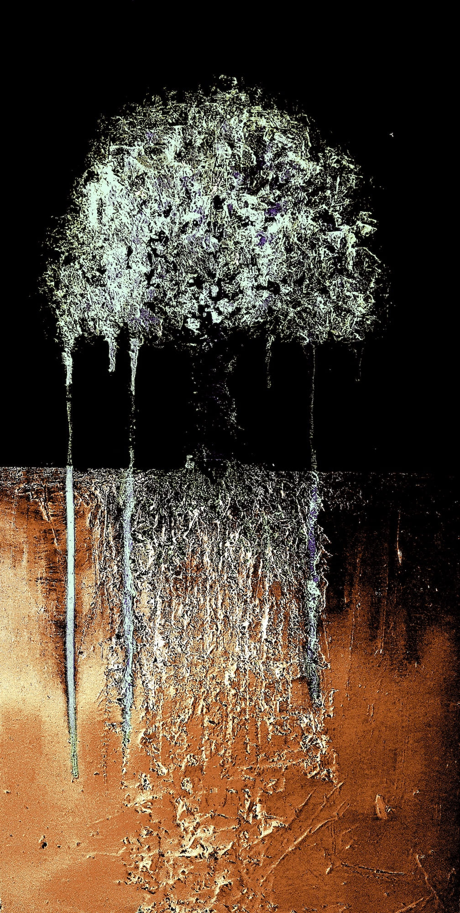

Nicht mehr lange, und die Technologie wird ausschliesslich mit ihrer eigenen Eingrenzung beschäftigt sein. Technologie gegen Technologie. Spätestens dann wird jeder einsehen können, dass die Technologisierung der Welt weder der Effizienz, noch der Erleichterung des Lebens dient (nicht in erster Linie), sondern ein grosses religiöses Ritual ist, das uns verpflichtet hat. Und die radikalsten Atheisten werden sich als die religiösesten Fanatiker zu erkennen geben (z. B. die „Tech-Bros“ oder die gut meinenden Naturwissenschaftler).
